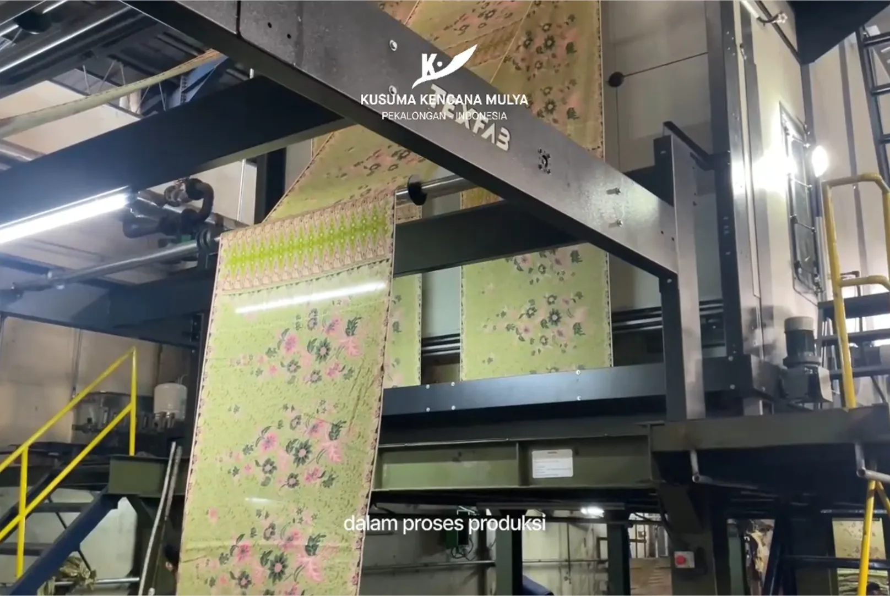

Mengenal Proses Steam pada Produksi Kain Printing dan Fungsinya
Kain yang baru keluar dari mesin printing memang sudah menampilkan motif dan warna. Namun, proses produksi kain printing tidak selalu selesai sampai di tahap tersebut. Pada jenis kain dan sistem pewarnaan tertentu, kain masih perlu melalui proses lanjutan, salah satunya adalah steam atau penguapan.
Proses ini berperan penting dalam membantu menghasilkan warna dan motif sesuai dengan karakteristik kain serta jenis pewarna yang digunakan.
Apa Fungsi Steam dalam Produksi Kain Printing?
Steam merupakan proses pemberian uap pada kain dengan kondisi tertentu, seperti suhu dan durasi yang disesuaikan dengan kebutuhan proses produksi.
Pada sistem printing yang menggunakan pewarna tertentu, proses steam membantu fiksasi warna agar pewarna dapat berikatan dengan serat kain secara optimal. Hasilnya dipengaruhi oleh jenis kain, jenis pewarna, dan kondisi proses yang digunakan.
Mengapa Proses Steam Perlu Diperhatikan?
Setiap jenis kain memiliki karakteristik yang berbeda. Begitu pula dengan jenis pewarna dan kebutuhan proses fiksasinya. Karena itu, pengaturan steam perlu disesuaikan agar hasil pewarnaan dapat memenuhi standar yang diharapkan.
Beberapa faktor yang perlu diperhatikan meliputi:
- Jenis kain: Karakteristik serat memengaruhi kebutuhan proses lanjutan.
- Jenis pewarna: Setiap jenis pewarna memiliki mekanisme fiksasi yang berbeda.
- Suhu dan durasi steam: Kondisi proses perlu disesuaikan untuk mendukung hasil pewarnaan yang optimal.
Setelah proses steam, kain umumnya masih memerlukan tahapan lanjutan, seperti pencucian atau pengeringan, sesuai jenis material dan sistem pewarnaan yang digunakan.
Proses Setelah Printing Menentukan Hasil Akhir Kain
Kualitas kain printing tidak hanya bergantung pada mesin dan proses pencetakan. Tahapan setelah printing juga berperan dalam menghasilkan warna yang optimal dan menjaga kesesuaian motif dengan desain.
Di PT Kusuma Kencana Mulya, setiap tahapan produksi perlu disesuaikan dengan karakteristik material dan kebutuhan proses untuk mendukung hasil kain printing yang sesuai dengan standar kualitas.
Sedang mencari partner produksi kain printing untuk brand Anda? Hubungi PT Kusuma Kencana Mulya untuk berkonsultasi mengenai kebutuhan desain dan produksi kain Anda.